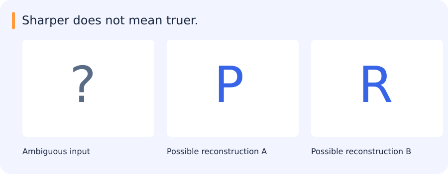

Sharper does not mean truer.
A blurry crop could contain either of two letter shapes. A generator can commit to a crisp answer without recovering new measured evidence.

| Notice | Interpret | Check |
|---|---|---|
| Both can look plausible | A sample is a hypothesis | Check identity and geometry |
Reveal the catch
A convincing output and a faithful observation are different claims.
Try it in 60 seconds: Show two plausible restorations and explain what the input cannot resolve.
Read for understanding, not page completion. Skip what you can already explain.
Jump to a concept
Learning to model observations
A generative model describes or samples an observation distribution. Useful applications include conditional image synthesis, restoration, simulation and representation learning. Realistic images alone do not establish that the model learned the target distribution or preserved an input's identity. A generated detail is a model hypothesis, not a measurement recovered from the sensor.
Autoencoders
An autoencoder maps x to a latent code z and reconstructs x from it. A bottleneck, noise or other constraints encourage the code to preserve selected structure rather than copy input trivially. Pixel reconstruction loss favors some information differently from a semantic objective. A low reconstruction error need not produce a useful classification embedding, and a high error can arise from a new camera rather than an anomalous object.
Variational autoencoders and ELBO
A VAE uses a prior p(z), a decoder distribution p_theta(x|z) and an approximate posterior q_phi(z|x). Its evidence lower bound is E_q[log p_theta(x|z)] - KL(q_phi(z|x) || p(z)). The difference between log p_theta(x) and this bound is a nonnegative KL divergence to the true posterior. The first term rewards reconstruction likelihood; the second regularizes the latent distribution. A deterministic reconstruction penalty is not automatically the same as a specified likelihood without assumptions about output noise.
For a Gaussian approximate posterior, the reparameterization z = mu + sigma*epsilon with epsilon sampled from a standard Gaussian allows gradients through mu and sigma. A strong decoder may ignore latent variables, and changing the balance of reconstruction and KL changes the model's behavior. Show both generated samples and reconstruction/latent diagnostics.
Generative adversarial networks
A GAN trains a generator to produce samples and a discriminator to distinguish generated from real examples. In the original minimax form, discriminator training and generator training optimize opposing objectives. The original saturating generator loss can provide weak gradients when the discriminator confidently rejects poor samples. A common nonsaturating alternative maximizes the discriminator's log probability of generated samples being real. Other losses change the game and its stability.
Generator loss decreasing does not prove sample quality improves: the discriminator may simply be weak. Mode collapse produces a narrow variety of convincing outputs. Training can oscillate because both objectives change as the opponent changes. Evaluate diversity, conditional consistency and downstream use, not one loss trace. Pix2pix uses paired conditional data; CycleGAN uses unpaired domains with cycle-consistency and adversarial terms. Cycle consistency does not guarantee truthful recovery of medically or geographically meaningful details.
Autoregressive and diffusion models
An autoregressive model factors a joint distribution into ordered conditional predictions. It can optimize likelihood but generation may require a sequence of steps. A diffusion model adds noise through a defined forward process and learns a reverse denoising/score-related process. Training often predicts noise, clean signal or a parameterized combination. Sampling choices trade compute and quality and must match the model's assumptions.
Conditioning with text, masks or images changes which distribution is modeled. Guidance can strengthen conditioning while reducing diversity or increasing artifacts. Evaluate on held-out conditions and check whether identity, geometry or small objects are preserved. A sharpened image can look more detailed while inventing structure.
Retained depth and current work
The legacy program included generative-model lectures and an optional ELBO explanation; the diffusion assignment itself was marked skippable. These concepts remain available here without introducing another required training project. Use the agent to derive the VAE bound or contrast two GAN objectives, then personally explain which evidence would make generated imagery unsuitable for a measurement task. The mentor can probe that reasoning even when no generator is trained.
Original source references and provenance
Original teaching text covering the cited topics, not a verbatim mirror. These references are provenance; no external reading is required to use this chapter.